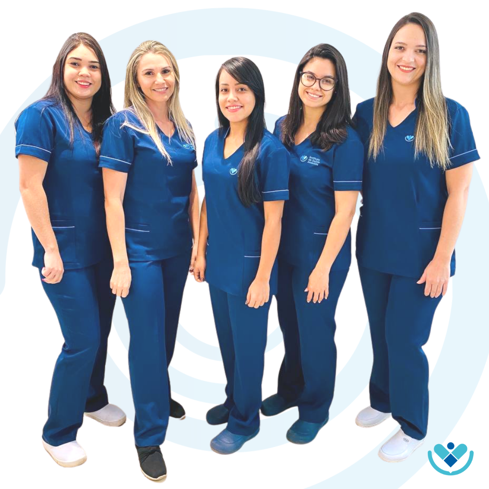

Cardiologista
Especialista em cardiologia preventiva e arritmias, com mais de 10 anos de experiência dedicada ao cuidado e bem-estar do coração dos seus pacientes.
Ginecologista
Especialista em ginecologia e obstetrícia, com ampla experiência no acompanhamento pré-natal e no atendimento integral à saúde da mulher.
Ortopedista
Especialista em traumatologia e cirurgia do aparelho locomotor, focado no tratamento de lesões esportivas e na reabilitação das articulações.
Pediatra
Dedicado ao desenvolvimento saudável de crianças e adolescentes, atuando na prevenção de doenças e no suporte acolhedor às famílias.
Cirurgiã Geral
Especialista em procedimentos cirúrgicos de alta complexidade e intervenções minimamente invasivas, priorizando a segurança e rápida recuperação do paciente.
Técnico em Radiologia
Profissional responsável pela execução de exames de imagem precisos e seguros, garantindo o suporte essencial para diagnósticos rápidos e eficientes.
Enfermeira Chefe
Especialista em cuidados intensivos e gestão de equipes de saúde, atuando na linha de frente para garantir um atendimento humanizado e de excelência.

Técnicos em Enerfemagem
Profissionais dedicados ao cuidado direto dos pacientes, auxiliando na administração de medicamentos, monitoramento de sinais vitais e suporte às necessidades diárias de saúde.